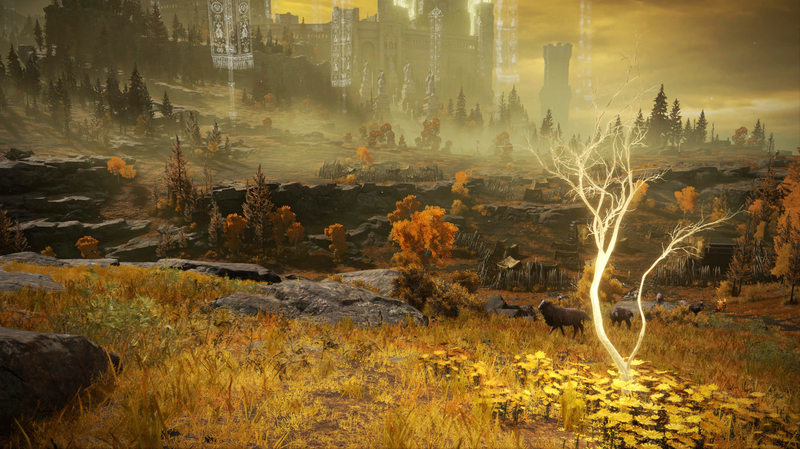
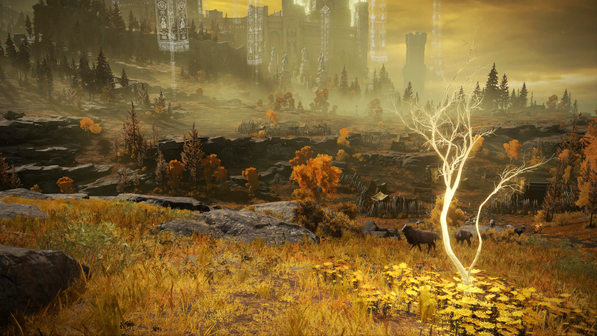

SINOPSE
Sinopse de Elden Ring:
Elden Ring é um RPG de ação em mundo aberto desenvolvido pela FromSoftware e publicado pela Bandai Namco. Ambientado nas vastas e sombrias Terras Intermédias, o jogo convida os jogadores a explorar um reino devastado, onde o poder do lendário Anel Prístino (Elden Ring) foi destruído, mergulhando o mundo no caos. Você assume o papel de um Maculado — um exilado convocado para restaurar o Anel e se tornar o novo Lorde Prístino. Guiado por mistérios antigos, deuses esquecidos e figuras enigmáticas, o jogador enfrentará inimigos colossais, chefes desafiadores e criaturas fantásticas, em uma jornada de redenção, poder e descoberta. Com narrativa criada em colaboração com George R. R. Martin (Game of Thrones) e direção de Hidetaka Miyazaki (Dark Souls, Bloodborne), Elden Ring oferece uma experiência épica, marcada por liberdade de exploração, combates intensos e uma atmosfera imersiva.
Prêmios Recebidos

GALERIA DE FOTOS
 

TRAILER DE ELDEN RING
BIOGRAFIA HIDETAKA MIYAZAKI
Hidetaka Miyazaki – Biografia
Hidetaka Miyazaki (宮崎 英高) nasceu em 1º de janeiro de 1974, em Shizuoka, Japão. Desde a infância, apaixonou-se por literatura fantástica, especialmente obras ocidentais como Dungeons & Dragons, O Senhor dos Anéis e os contos de H. P. Lovecraft. Mesmo sem compreender totalmente o inglês, criava suas próprias interpretações das histórias, experiência que influenciou seu estilo enigmático de narrativa nos jogos.
Ascensão com a Série Souls
O sucesso mundial veio com Dark Souls (2011), consolidando Miyazaki como um dos maiores criadores da indústria. Com jogabilidade desafiadora, mundo interconectado e narrativa ambiental, Dark Souls originou o gênero soulslike.
- Dark Souls II (2014) – Supervisor
- Bloodborne (2015) – Exclusivo PlayStation 4, aclamado pelo horror gótico
- Dark Souls III (2016) – Conclusão da trilogia
- Sekiro: Shadows Die Twice (2019) – Vencedor do Jogo do Ano no The Game Awards
- Elden Ring (2022) – Em colaboração com George R. R. Martin, multipremiado